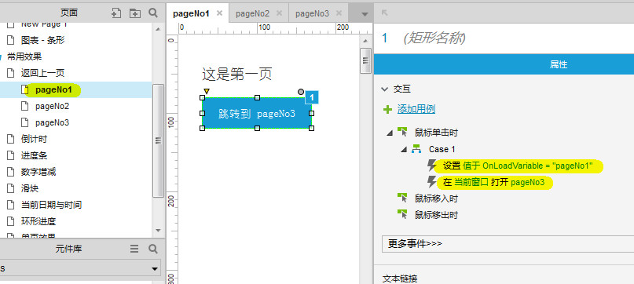
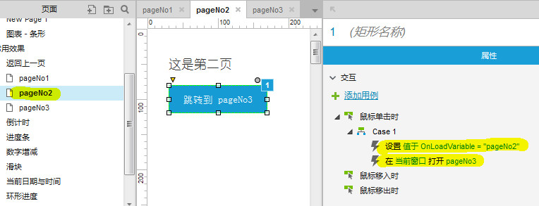
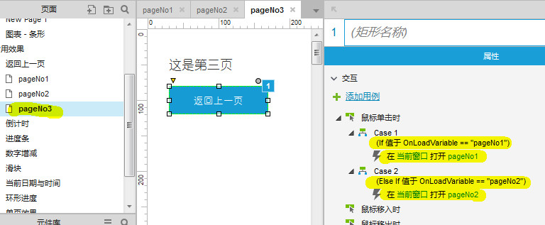
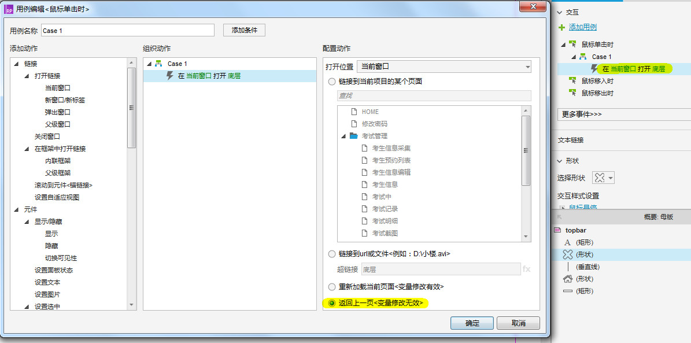

步骤
-
在pageNo1页面跳转到pageNo3页面，如下图：
-
在pageNo2页面跳转到pageNo3页面，如下图：
-
在pageNo3页面点击返回上一页按钮可以返回到pageNo1、pageNo2，如下图：
使用axure自带的返回上一页功能
实现原理：通过设置全局变量，当进入下一页之前，将当前页的值保存在全局变量中。
在三个页面，分别为pageNo1、pageNo2、pageNo3，点击pageNo1跳转到pageNo3，点击pageNo2跳转到pageNo3，在pageNo3点击上一页可以返回到pageNo1、pageNo2。具体实现方法请看下面